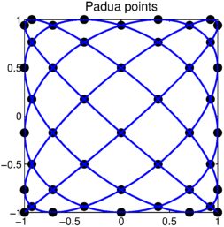
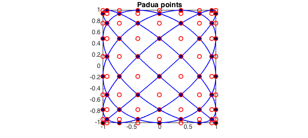
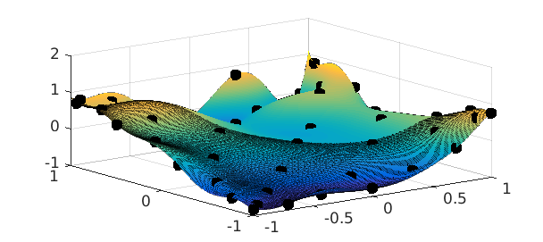
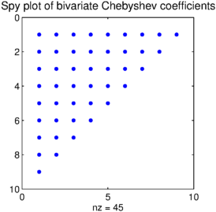

Padua points (named after the University of Padua, where they were discovered in 2005 [1]) are the first known example of a unisolvent point set over bivariate polynomials which have a provably minimal growth in Lebesgue constant of $O(\log^2 n)$. They are sometimes refered to as the "Chebyshev points in 2D" [1].
It seemed only natural to include these points in Chebfun, and they are now available through the paduapts method. For example, here is the Padua grid corresponding to $n = 8$:
n = 8;
x = paduapts( n );
plot(x(:,1), x(:,2), 'ok', 'MarkerFaceColor', 'k')
axis equal, axis([-1 1 -1 1]), hold on
FS = 'FontSize';
title('Padua points', FS, 14), set(gca, FS, 12)
There are a number of characterizations of Padua points. One is as the intersection of a certain Lissajous curve [2] with itself and the boundary of $[-1,1]\times[-1,1]$:
t = chebfun('t', [0 pi]);
L = -cos((n + 1)*t) - 1i*cos(n*t); % Lissajous curve
plot(L, 'b')

Another is as every other point from an $(n+1)\times(n+2)$ tensor product Chebyshev grid:
x1 = chebpts(n + 1); x2 = chebpts(n + 2); [X, Y] = meshgrid(x1, x2); plot(X, Y, 'or'), hold off

If a matrix rather than a bivariate function is supplied as an input, Chebfun2 normally assumes that its values correspond to data on a Chebyshev tensor product grid. However, if the 'padua' flag is supplied, the constructor assumes the values are data on a Padua grid and returns a bivariate polynomial that interpolates the prescribed data. For example:
f = @(x,y) cos(exp(2*x+y)).*sin(y); fx = f(x(:,1), x(:,2)); % Samples from Padua grid F = chebfun2(fx, [-1 1 -1 1], 'padua'); % Construct Chebfun2 from samples plot(F), hold on plot3(x(:,1), x(:,2), F(x(:,1), x(:,2)), 'ok', 'MarkerFaceColor', 'k'), hold off

The corresponding Padua interpolant is a bivariate Chebyshev polynomial of total degree $n$ (i.e. the degrees in $x$ and $y$ sum to at most $n$). We can verify this by looking at the coefficients of the interpolant:
C = chebcoeffs2(F);
C(abs(C) < 1e-10) = 0;
spy(C), shg
title('Spy plot of bivariate Chebyshev coefficients',FS,14)

We hope this addition will make it easy to explore Padua interpolants in Chebfun2!
References
-
M. Caliari, S. De Marchi, and M. Vianello, "Bivariate polynomial interpolation on the square at new nodal sets", Applied Mathematics and Computation, 165 (2005), 261-274.
-
Chebfun Example: geom/Lissajous